Analyse post-IR IRSL measurement sequences
Source:R/analyse_pIRIRSequence.R
analyse_pIRIRSequence.RdThe function performs an analysis of post-IR IRSL sequences including curve fitting on RLum.Analysis objects.
analyse_pIRIRSequence( object, signal.integral.min, signal.integral.max, background.integral.min, background.integral.max, dose.points = NULL, sequence.structure = c("TL", "IR50", "pIRIR225"), plot = TRUE, plot.single = FALSE, ... )
Arguments
| object | RLum.Analysis or list of RLum.Analysis objects (required): input object containing data for analysis. If a list is provided the functions tries to iteratre over the list. |
|---|---|
| signal.integral.min | integer (required): lower bound of the signal integral. Provide this value as vector for different integration limits for the different IRSL curves. |
| signal.integral.max | integer (required): upper bound of the signal integral. Provide this value as vector for different integration limits for the different IRSL curves. |
| background.integral.min | integer (required): lower bound of the background integral. Provide this value as vector for different integration limits for the different IRSL curves. |
| background.integral.max | integer (required): upper bound of the background integral. Provide this value as vector for different integration limits for the different IRSL curves. |
| dose.points | numeric (optional): a numeric vector containing the dose points values. Using this argument overwrites dose point values in the signal curves. |
| sequence.structure | vector character (with default):
specifies the general sequence structure. Allowed values are |
| plot | logical (with default): enables or disables plot output. |
| plot.single | logical (with default):
single plot output ( |
| ... | further arguments that will be passed to the function
analyse_SAR.CWOSL and plot_GrowthCurve. Furthermore, the arguments |
Value
Plots (optional) and an RLum.Results object is returned containing the following elements:
| DATA.OBJECT | TYPE | DESCRIPTION |
..$data : | data.frame | Table with De values |
..$LnLxTnTx.table : | data.frame | with the LnLxTnTx values |
..$rejection.criteria : | data.frame | rejection criteria |
..$Formula : | list | Function used for fitting of the dose response curve |
..$call : | call | the original function call |
The output should be accessed using the function get_RLum.
Details
To allow post-IR IRSL protocol (Thomsen et al., 2008) measurement analyses this function has been written as extended wrapper function for the function analyse_SAR.CWOSL, facilitating an entire sequence analysis in one run. With this, its functionality is strictly limited by the functionality of the function analyse_SAR.CWOSL.
**Defining the sequence structure **
The argument sequence.structure expects a shortened pattern of your sequence structure and was
mainly introduced to ease the use of the function. For example: If your measurement data contains
the following curves: TL, IRSL, IRSL, TL, IRSL, IRSL, the sequence pattern in sequence.structure
becomes c('TL', 'IRSL', 'IRSL'). The second part of your sequence for one cycle should be
similar and can be discarded. If this is not the case (e.g., additional hotbleach) such curves
have to be removed before using the function.
If the input is a list
If the input is a list of RLum.Analysis-objects, every argument can be provided as list to allow for different sets of parameters for every single input element. For further information see analyse_SAR.CWOSL.
Note
Best graphical output can be achieved by using the function pdf
with the following options:
pdf(file = "<YOUR FILENAME>", height = 15, width = 15)
Function version
0.2.4
How to cite
Kreutzer, S., 2020. analyse_pIRIRSequence(): Analyse post-IR IRSL measurement sequences. Function version 0.2.4. In: Kreutzer, S., Burow, C., Dietze, M., Fuchs, M.C., Schmidt, C., Fischer, M., Friedrich, J., Riedesel, S., Autzen, M., Mittelstrass, D., 2020. Luminescence: Comprehensive Luminescence Dating Data Analysis. R package version 0.9.9. https://CRAN.R-project.org/package=Luminescence
References
Murray, A.S., Wintle, A.G., 2000. Luminescence dating of quartz using an improved single-aliquot regenerative-dose protocol. Radiation Measurements 32, 57-73. doi: 10.1016/S1350-4487(99)00253-X
Thomsen, K.J., Murray, A.S., Jain, M., Boetter-Jensen, L., 2008. Laboratory fading rates of various luminescence signals from feldspar-rich sediment extracts. Radiation Measurements 43, 1474-1486. doi: 10.1016/j.radmeas.2008.06.002
See also
Author
Sebastian Kreutzer, IRAMAT-CRP2A, Universite Bordeaux Montaigne (France) , RLum Developer Team
Examples
### NOTE: For this example existing example data are used. These data are non pIRIR data. ### ##(1) Compile example data set based on existing example data (SAR quartz measurement) ##(a) Load example data data(ExampleData.BINfileData, envir = environment()) ##(b) Transform the values from the first position in a RLum.Analysis object object <- Risoe.BINfileData2RLum.Analysis(CWOSL.SAR.Data, pos=1) ##(c) Grep curves and exclude the last two (one TL and one IRSL) object <- get_RLum(object, record.id = c(-29,-30)) ##(d) Define new sequence structure and set new RLum.Analysis object sequence.structure <- c(1,2,2,3,4,4) sequence.structure <- as.vector(sapply(seq(0,length(object)-1,by = 4), function(x){sequence.structure + x})) object <- sapply(1:length(sequence.structure), function(x){ object[[sequence.structure[x]]] }) object <- set_RLum(class = "RLum.Analysis", records = object, protocol = "pIRIR") ##(2) Perform pIRIR analysis (for this example with quartz OSL data!) ## Note: output as single plots to avoid problems with this example results <- analyse_pIRIRSequence(object, signal.integral.min = 1, signal.integral.max = 2, background.integral.min = 900, background.integral.max = 1000, fit.method = "EXP", sequence.structure = c("TL", "pseudoIRSL1", "pseudoIRSL2"), main = "Pseudo pIRIR data set based on quartz OSL", plot.single = TRUE)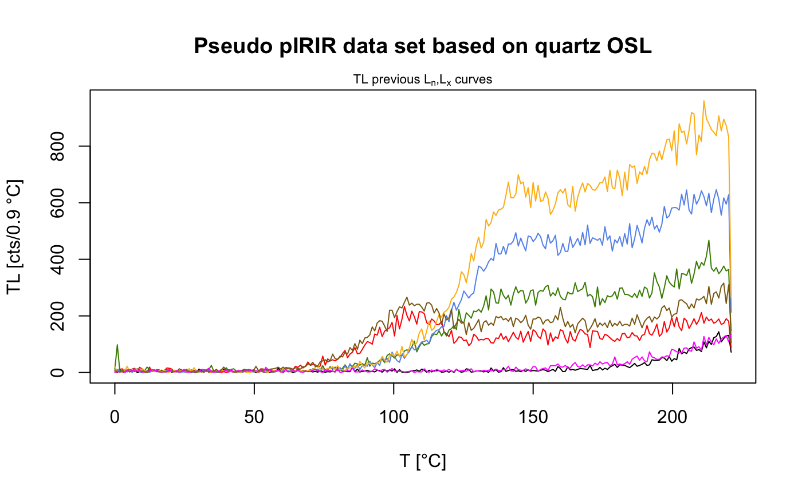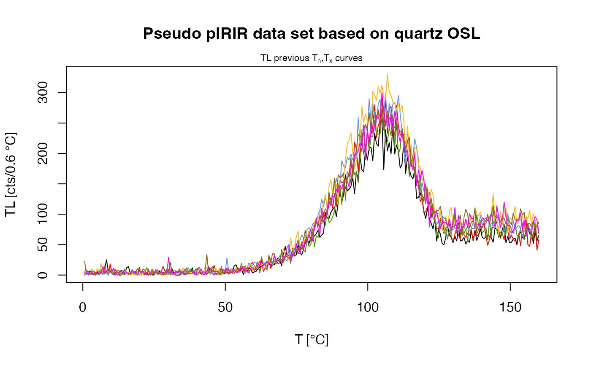#> [plot_GrowthCurve()] Fit: EXP (interpolation) | De = 1668.25 | D01 = 1982.76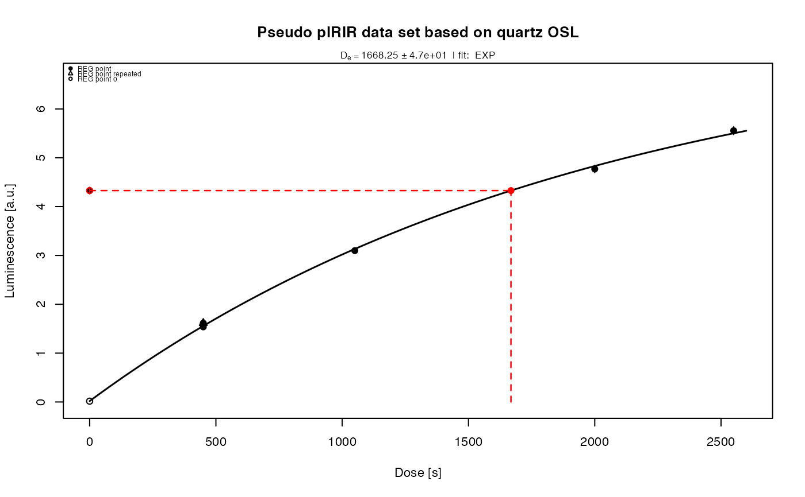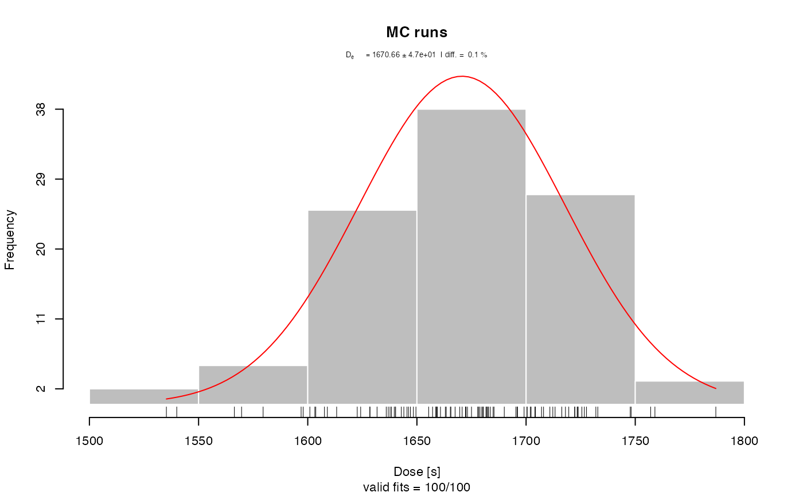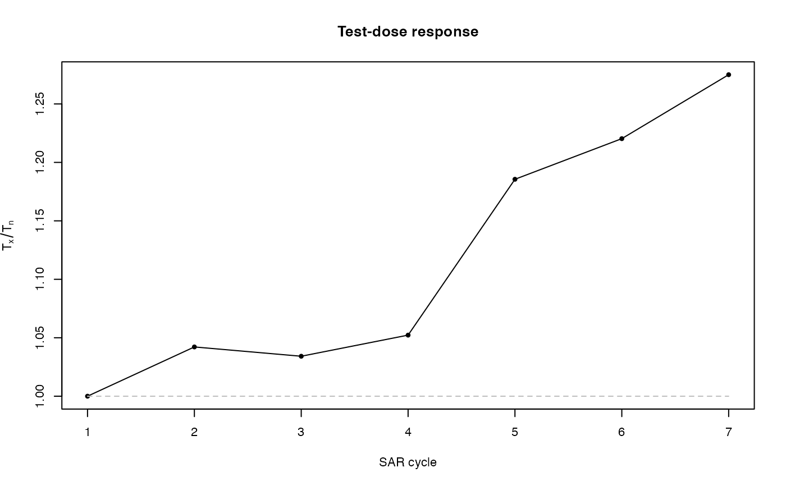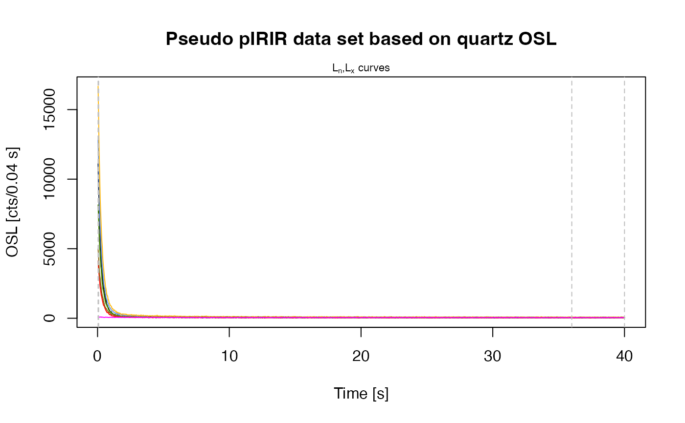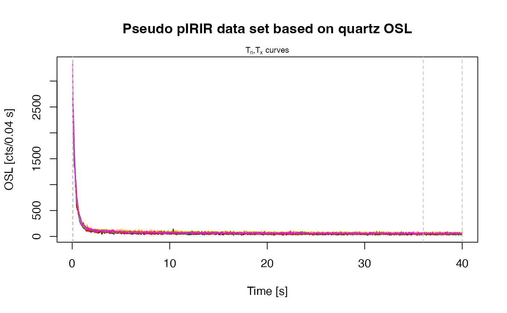#> [plot_GrowthCurve()] Fit: EXP (interpolation) | De = 1668.25 | D01 = 1982.76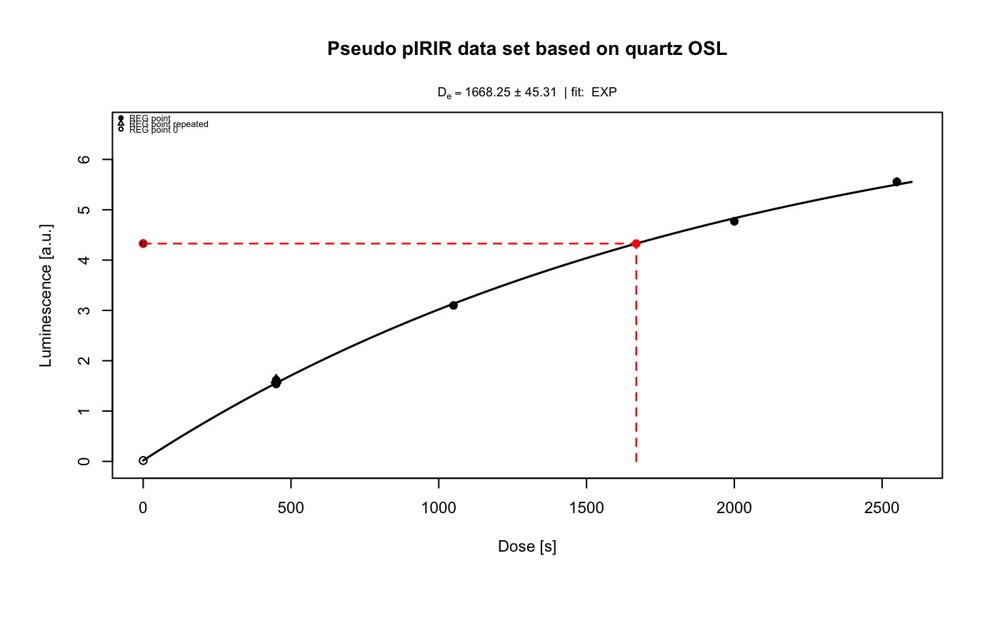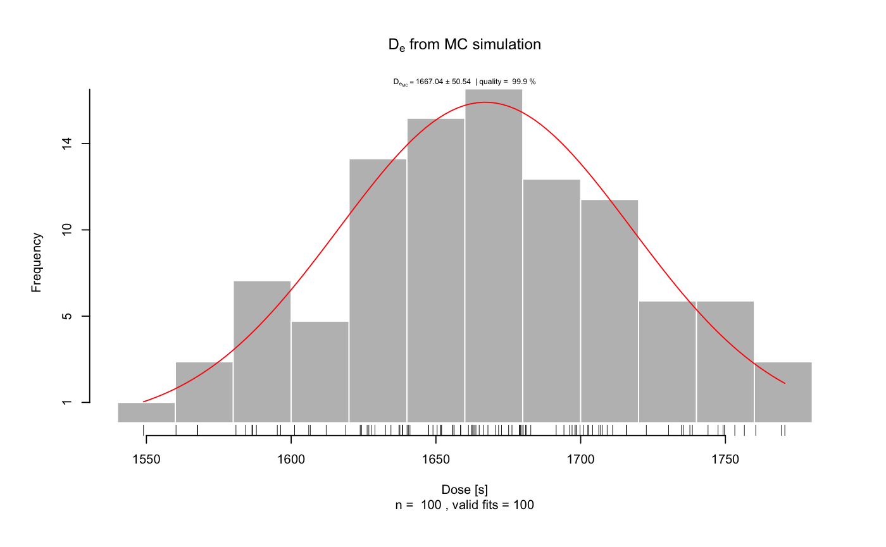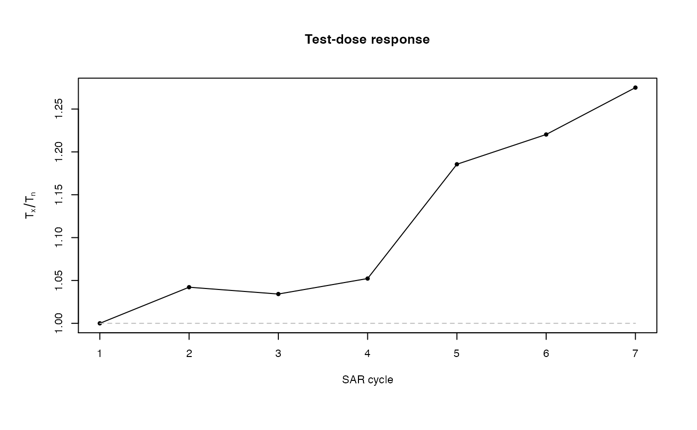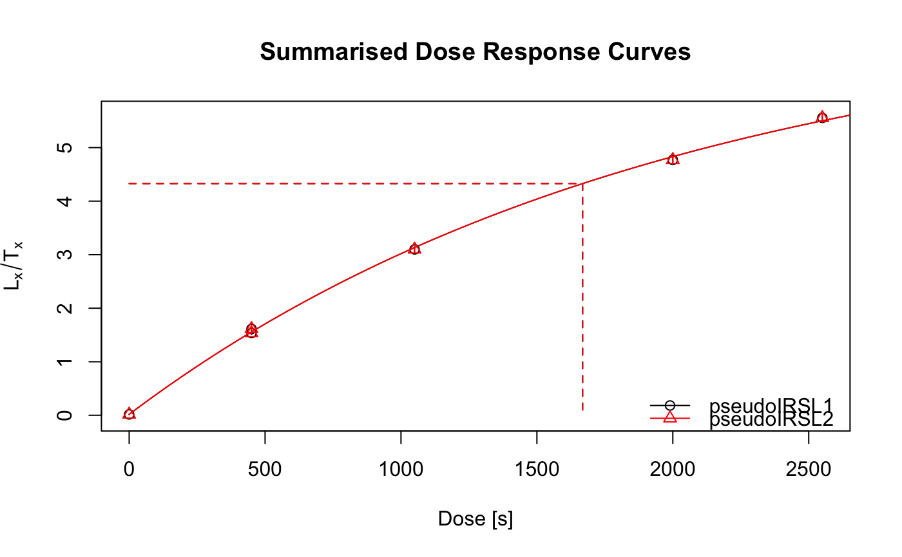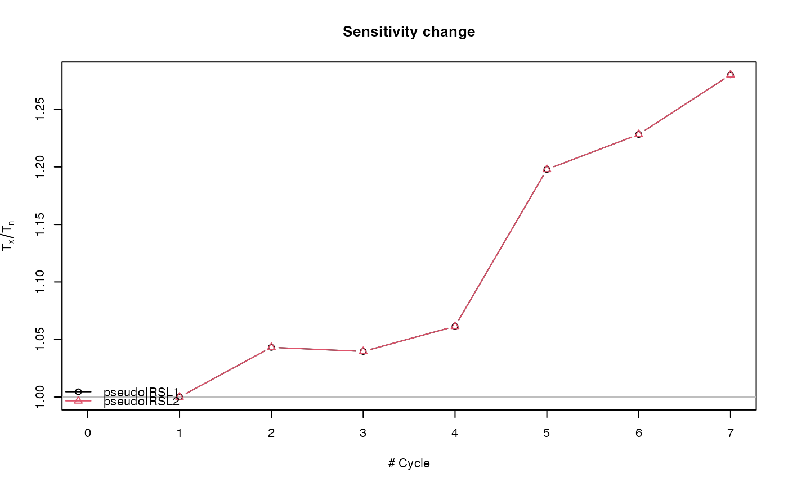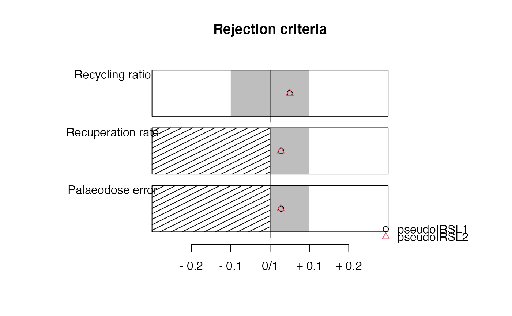##(3) Perform pIRIR analysis (for this example with quartz OSL data!) ## Alternative for PDF output, uncomment and complete for usage if (FALSE) { tempfile <- tempfile(fileext = ".pdf") pdf(file = tempfile, height = 15, width = 15) results <- analyse_pIRIRSequence(object, signal.integral.min = 1, signal.integral.max = 2, background.integral.min = 900, background.integral.max = 1000, fit.method = "EXP", main = "Pseudo pIRIR data set based on quartz OSL") dev.off() }